opendeck-strip previews: the zj-strip-bridge strip
What the N4E touch strip shows for each example, rendered by opendeck-strip from the
zj-strip-bridge status document, without a device (./preview.sh). Each image is the 800x128 raw frame.
Default built-in templates, no template settings. Compact mode only sets zjsb_mode and zjsb_slot.
Custom one or more zjsb_*_template keys of config.toml, shown in the boxes under the title.
Default templates 13 examples
What you get without any template setting: first the strip, then the one-slot compact mode.
Strip
The whole touch strip, the default mode.
Default Mixed: two blocked, one failed, one working, one done
Five agents. Segment 1 counts them; segments 2 and 3 are the two that wait longest, segment 4 summarises the other three.
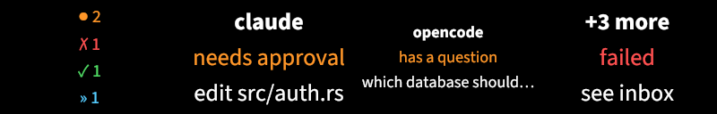
Default Three agents
Claude waits for approval, Codex works (60%), OpenCode has finished.
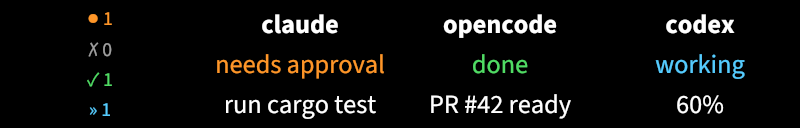
Default Many panes
More than three active panes: two are shown, the rest fold into +N more, headed by the most urgent hidden state.
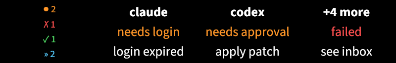
Default One pane
A single blocked pane.
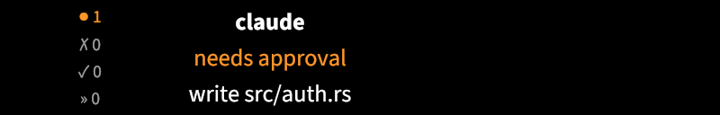
Default One agent with background tasks
By default the message is shown, not the task count.
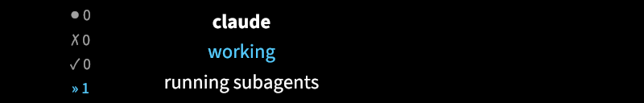
Default Nothing active
The counts panel stays, all grey, and the other segments say that all is clear.
Default Untrusted text
A pane whose name and message contain markup, a segment separator and an escape code. They are shown as plain text and cannot add segments.
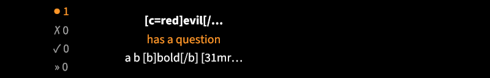
One slot (compact mode)
zjsb_mode and zjsb_slot are set; the template is the default. The slot is drawn as the first 200 px of the frame; on the device it is the one dial or key you chose. It shows the most urgent state with its count, and the top pane.
Default Mixed
Two panes wait for you: the slot shows the orange marker, 2, and the pane that has waited longest.
zjsb_mode = "compact"
zjsb_slot = "dial1"

Default Three agents
Claude waits, so the slot shows it.
zjsb_mode = "compact"
zjsb_slot = "dial1"
Default Many panes
Only the most urgent pane is named; the count covers all panes in that state.
zjsb_mode = "compact"
zjsb_slot = "dial1"
Default One pane
A single blocked pane.
zjsb_mode = "compact"
zjsb_slot = "dial1"

Default Working pane
No waiting pane, so the top state is working.
zjsb_mode = "compact"
zjsb_slot = "dial1"
Default Nothing active
The slot stays blank (empty idle template). With zjsb_blank_when_idle it is cleared instead.
zjsb_mode = "compact"
zjsb_slot = "dial1"
Custom templates 14 examples
The same documents laid out with zjsb_entry_template, zjsb_counts_template, zjsb_more_template, zjsb_compact_template and zjsb_idle_template.
Strip
Templates for the touch strip.
Custom Idle text
zjsb_idle_template replaces the whole output when nothing is active.
zjsb_idle_template = "[c=grey]all quiet[/c]\n{total} active"
Custom Background tasks
Child records show up as {tasks}.
zjsb_entry_template = "[b]{app|title:14}[/b]\n[c={color}]{state_label}[/c]\n{tasks|progress_pct|msg:22}"
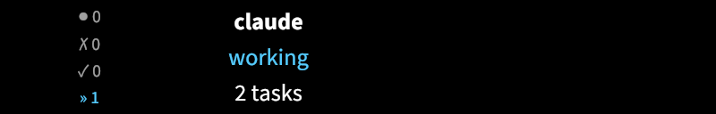
Custom Age
{age} is the time since the pane last reported.
zjsb_entry_template = "[b]{app|title:14}[/b] [c=grey]{age}[/c]\n[c={color}]{state_label}[/c]\n{msg:22}"
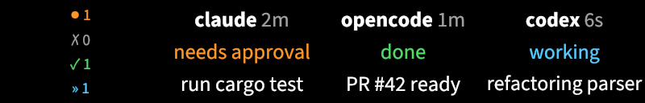
Custom Counts and entries re-templated
A one-line summary on the left, a marker before each name.
zjsb_counts_template = "[b]{total}[/b] active\n[c={needs_you_color}]{needs_you} need you[/c]\n[c={failed_color}]{failed} failed[/c]"
zjsb_entry_template = "{marker} [b]{app|title:12}[/b]\n[c={color}]{state_label}[/c]\n[c=grey]{msg:24}[/c]"
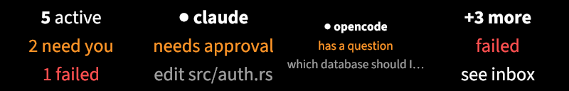
Custom Message first
The request is the headline, the agent a grey caption.
zjsb_entry_template = "{msg:20}\n[c={color}]{state_label}[/c]\n[c=grey]{app|title}[/c]"
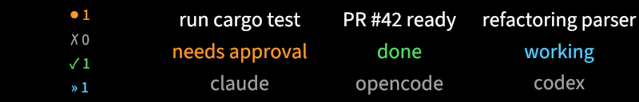
Custom Big marker
A large coloured marker and the name. [s=N] scales text between 0.5 and 3.
zjsb_counts_template = "[s=1.6][c={needs_you_color}]● {needs_you}[/c][/s]\n[s=1.6][c={failed_color}]✗ {failed}[/c][/s]"
zjsb_entry_template = "[s=2.4][c={color}]{marker}[/c][/s]\n[b]{app|title:12}[/b]"
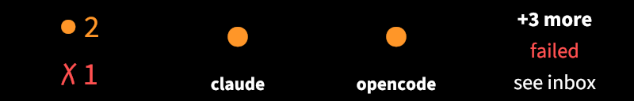
Custom Progress first
Working panes show their percentage, others their state.
zjsb_entry_template = "[b]{app|title:14}[/b]\n[c={color}]{progress_pct|state_label}[/c]\n[c=grey]{msg:22}[/c]"
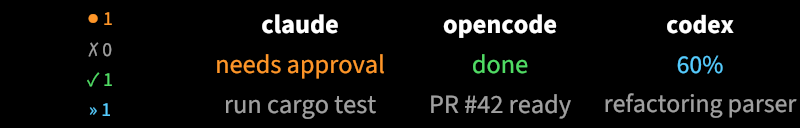
Custom State and kind
The raw protocol values, {state} and {kind}, for people who want them.
zjsb_entry_template = "[b]{app|title:14}[/b]\n[c={color}]{state}[/c] [c=grey]{kind}[/c]\n{msg:22}"
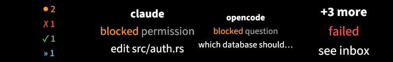
Custom Where is it?
Tab and pane ids, to find the pane that needs you.
zjsb_entry_template = "[b]{app|title:12}[/b]\n[c={color}]{state_label}[/c]\n[c=grey]tab {tab} pane {pane} {age}[/c]"
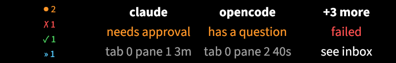
Custom The +N more segment
zjsb_more_template, here with the marker and the number of hidden panes.
zjsb_more_template = "[s=1.6][c={color}]{marker}[/c][/s] [b]+{hidden}[/b]\n[c={color}]{state_label}[/c]"
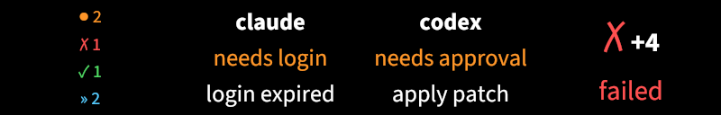
One slot (compact mode)
zjsb_compact_template and zjsb_idle_template, with the mode and the slot set.
Custom Compact with age
zjsb_compact_template with the age.
zjsb_mode = "compact"
zjsb_slot = "dial1"
zjsb_compact_template = "{marker} {count} [c=grey]{age}[/c]\n[b]{app|title:10}[/b]\n{state_label}"
Custom Compact: ratio
Waiting panes out of all active ones.
zjsb_mode = "compact"
zjsb_slot = "dial1"
zjsb_compact_template = "[s=1.8][c={color}]{needs_you}/{total}[/c][/s]\n{state_label}"
Custom Compact: message
The request itself in the slot.
zjsb_mode = "compact"
zjsb_slot = "dial1"
zjsb_compact_template = "[c={color}]{marker}[/c] [b]{app|title:8}[/b]\n{msg:14}"
Custom Compact: idle text
What the slot shows when nothing is active.
zjsb_mode = "compact"
zjsb_slot = "dial1"
zjsb_idle_template = "[c=grey]quiet[/c]"